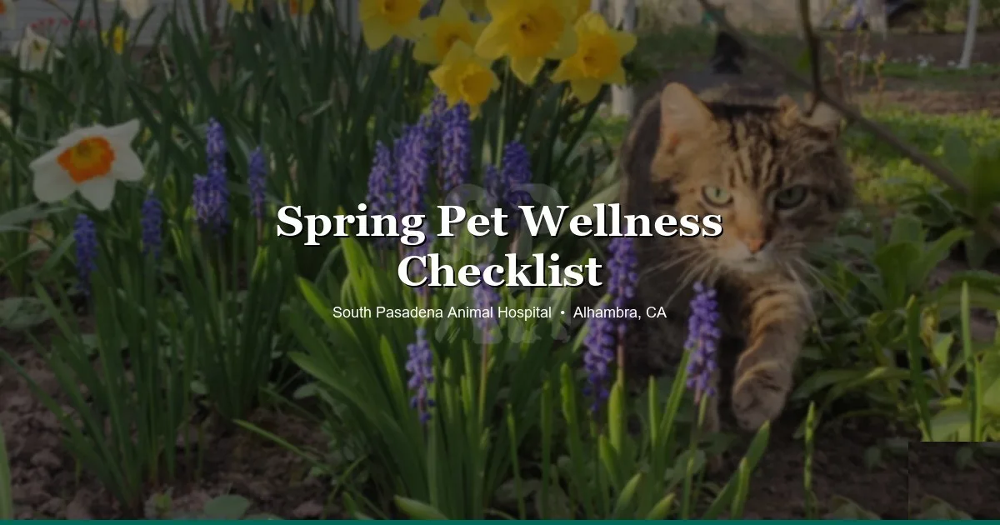

April 2, 2026 · 10 min read
Spring Pet Wellness Checklist — What Your Alhambra Vet Actually Wants You to Do 🌸

SoCal doesn't really do spring. We get about two weeks between the last rain and the first triple-digit heat wave, and during those two weeks everything blooms at once, your dog starts scratching like crazy, and our phone rings nonstop because half the San Gabriel Valley just remembered their pet hasn't been to the vet since last year.
Every year, same pattern. March rolls around, the jacarandas start budding, and suddenly everyone in Alhambra, South Pasadena, San Gabriel, and Monterey Park decides it's time for the annual exam they skipped in January. We love it. But we also know that a lot of these visits could go smoother if people knew what to actually focus on heading into spring.
So here's what we'd tell you if you were standing in our exam room right now.
Dogs
The annual exam you've been putting off. We see a lot of dogs in spring who haven't been in since last spring. That's fine — life happens. But don't wait until July when we're slammed and you're stuck with the one appointment slot nobody wants. Spring is the sweet spot. Get it done now while the calendar still has room.
Flea and tick prevention. In Southern California, fleas never fully disappear. They slow down a little in winter, sure, but they don't die off the way they do in places with real winters. Spring is when they explode. We see more flea allergy dermatitis in April and May than any other months — dogs coming in with raw, chewed-up skin around their tail base and belly, and the owners had no idea fleas were the cause.
If you're using one of those cheap topical treatments from the grocery store, that's probably why it's not working. Those formulations are outdated, and a lot of flea populations in LA County are straight-up resistant to them. Talk to us about what actually works. It matters.
Vaccines. Core vaccines follow a schedule — your vet will tell you what's due. The one people ask about most is bordetella (kennel cough). Here's our honest take: if your dog never leaves the house and the yard, you can probably skip bordetella. If they go to Hermon Dog Park every weekend, or daycare, or the groomer — don't skip it. Kennel cough rips through those places fast.
Dental health. Bad breath is not normal. It's the number one thing owners dismiss that actually indicates a real problem. "Oh, he's always had stinky breath." No. That smell is bacteria, and it usually means there's tartar buildup, gum inflammation, or worse happening in there. Dogs over three should have a dental evaluation. We'll tell you honestly whether they need a cleaning or if they're fine.
Allergies. If your dog turns into an itchy mess every spring — chewing their paws, red belly, rubbing their face on the carpet — that's almost certainly environmental allergies. Not food. SoCal pollen hits hard from March through June, and dogs absorb allergens through their skin, not just by breathing them in. A lot of owners spend months switching foods trying to fix seasonal allergies, and it never works because food was never the problem. We can help you figure out an actual plan.
Cats
Indoor cats still need annual exams. This is the hill we'll die on. "But she never goes outside." Doesn't matter. Dental disease, kidney issues, thyroid problems, weight gain — none of these care whether your cat goes outside or not. We catch things on routine exams that owners had zero idea about, because cats are masters of hiding discomfort.
Flea prevention — yes, even for indoor cats. Fleas come inside on your shoes, on your pants, through the screen door. We see indoor cats with fleas all the time. The owners are always shocked. "But she never goes out!" We know. The fleas came to her. Year-round prevention is the move, but if you've been skipping it, spring is the bare minimum restart point.
Weight check. Winter weight gain is real for cats, especially indoor ones. Less daylight, less activity, same amount of food. If your cat looks like a throw pillow right now, spring is the time to address it before it turns into a long-term problem. We can help you figure out a realistic feeding plan — crash diets are actually dangerous for cats (hepatic lipidosis is no joke).
Bloodwork for cats over seven. Kidney disease and hyperthyroidism are incredibly common in middle-aged and older cats. Both are manageable if caught early, both are a much bigger deal if caught late. Drinking more water than usual? That's not good hydration. That's a symptom. Larger clumps in the litter box? Same thing. Baseline bloodwork in spring gives us something to compare against later.
Lilies will kill your cat. Every Easter we get at least one lily toxicity case. Every. Single. Year. Easter lilies, tiger lilies, Asiatic lilies — all of them. Even the pollen. A cat brushes against the flower, licks the pollen off their fur, and within hours you've got acute kidney failure. If someone gives you lilies this spring, keep them completely out of the house. Not on a high shelf. Out of the house.
Open windows. People across Alhambra and South Pasadena start opening windows when it warms up. Makes sense. But indoor cats can and do push through screens. We've seen cats fall from second-story windows, escape and get lost, or get into fights with outdoor cats through a torn screen. If you're opening windows, make sure your screens are secure and sturdy. Test them. Push on them yourself.
Rabbits, Birds, Reptiles & Small Mammals
Most vet clinics don't even include this section. We do, because we see these animals every day and they need spring care too.
Rabbits. Spring means shedding season, and rabbits shed a lot. The problem isn't the fur on your couch — it's the fur they swallow. Unlike cats, rabbits can't vomit. All that ingested hair has to move through the GI tract, and if it doesn't, you're looking at GI stasis, which can turn life-threatening fast. Brush your rabbit regularly during spring shedding. Make sure they're eating plenty of hay (timothy, not alfalfa for adults). Monitor their droppings — smaller, drier, or fewer poops than normal is an early warning sign. We've written more about this in our rabbit GI stasis guide.
Birds. If your bird has been quiet this winter, that might not be "hibernation mode." Birds don't hibernate. A quiet bird is often a sick bird, and by the time they're visibly fluffed up or sitting on the cage floor, they've been unwell for a while. Annual bloodwork matters more than people think for birds — it catches liver and kidney issues, infections, and nutritional deficiencies that you'd never spot from the outside. Spring is a good time to schedule that wellness panel.
Reptiles. Here's one a lot of reptile owners don't know: UVB bulbs degrade before they burn out. Your bearded dragon's bulb might be glowing just fine but outputting almost no usable UVB. That means calcium isn't being absorbed properly, and you're slowly heading toward metabolic bone disease without realizing it. Replace UVB bulbs every six months, regardless of whether they still light up. Also — as temps warm up and reptiles get more active, check for retained shed. Stuck shed around toes and tail tips can cut off circulation. More on reptile health in our bearded dragon vet signs post.
Hamsters and guinea pigs. Weigh them monthly. We can't stress this enough. A guinea pig losing 50 grams might not look any different to you, but that's significant — it could signal dental problems, a respiratory infection, or something else brewing under the surface. A cheap kitchen scale is all you need. Track it. If the number trends down over two or three weigh-ins, bring them in before it becomes an emergency. See our posts on guinea pig respiratory issues and hamster sick signs for more on what to watch for.
The Spring Rush Is Real
Every year, April through June is our busiest stretch. Everyone remembers their pet's annual exam at the same time. The phones get busy, the schedule fills up, and suddenly people are waiting two or three weeks for an appointment they could've booked in March.
If you want the appointment slot you actually want — a Saturday morning, or a weekday after work — book it now. Not in May when the calendar is already packed. Our Alhambra location has 15+ parking spots and easy access from anywhere across the SGV, so the visit itself is painless. It's just the scheduling that gets tight.
Your Spring Reset
Spring is a good reset point. It doesn't matter if you fell behind on flea prevention over winter, or your cat's overdue for bloodwork, or you haven't replaced that UVB bulb since last summer. That's what this season is for — catching up.
If you've been putting off the vet visit, this is your nudge. Pick up the phone, book online, get it on the calendar. Your future self (and your pet) will be better off for it.